| 年月 | 内容 |
|---|---|
| 2026年4月 | 『次世代育成支援対策推進法・女性活躍推進法に基づく一般事業主行動計画』を更新 |
| 2025年5月 | 社員数・売上高、沿革の更新 |
| 2024年1月 | 令和6年能登半島地震災害の義援金として100万円の寄附を実施 |
| 2023年10月 | SDGs債へ投資 |
| 2023年7月 | 『反社会的勢力排除に向けた基本方針』を策定 |
| 2023年1月 | SDGs宣言 |
| 2022年3月 | 『次世代育成支援対策推進法・女性活躍推進法に基づく一般事業主行動計画』を策定 |
| 2020年11月 | レジリエンス認証を取得 |
人の暮らしと産業の限りない発展を願って・・・。
仁淀鉄鋼は”あらゆる需要家にとってかけがえのない加工業者たること”を創業以来の使命とし、時代とともに発展する企業を目指して、従業員一同努力してまいりました。
お陰様で、スリット専業の薄板コイルセンターとして大手企業ではマネのできない機動力と小回りの良さを活かし、求める企業に求める世界の国々に、高度な付加価値を添えて商品を送り出すことができ、大きく成長を遂げましたことは、偏に皆様方のご愛顧ご支援の賜物と深く感謝致しております。
時代は今、大きな転換期を迎え、産業構造や社会状況もまた、めまぐるしく激動し、企業自身もかってない変革を迫られています。このターニングポイントを私たちは、力強く乗り切り、２１世紀更なる飛躍を目指し、積極的な設備投資をはじめとする生産性の追求と、より細やかなこころ配りを持った営業活動によって、立ち止まることなく未来を見つめる企業として、さらに研鑚を続けてまいります。
今後とも、いっそうのご指導ご鞭撻の上、倍旧のお引き立てを賜りますよう、お願い申し上げます。
当社は、鉄鋼流通機構の一員としてコイルセンター業界に属し、薄板・ステンレス・アルミ等のスリット加工販売を主体としております。
当社の製品は需要家において、プレス加工・フォーミング加工・パイプ製造等に加工され、自動車・家電・建築・産業機械・自転車等の広範囲な用途に使用されております。
生産形態は、受注生産を基本としておりますが、製造・販売・管理のシステム化を図り、短納期体制を確立させております。
工場の操業は空調管理を行っております。製品の錆対策と、社員の作業環境改善を目的としております。
| 日本製鉄 ㈱ |
| ㈱ 神戸製鋼所 |
| 東洋鋼鈑 ㈱ |
| 中國鋼鐵股分有限公司 |
| 大阪商工会議所 |
| 全国コイルセンター工業組合 |
| 関西コイルセンター工業会 |
| 浦安鐵鋼団地協同組合 |
| １９５８（昭和３３）年 ３月 | 大阪市中央区に渡辺一生商店個人創業 |
| １９６３（昭和３８）年１１月 | 法人に改組、仁淀鉄鋼株式会社 設立 |
| １９６７（昭和４２）年 ５月 | 大阪市平野区瓜破に工場竣工 ※１９７９（昭和５４）年１１月売却 |
| １９６９（昭和４４）年 ３月 | 大阪市中央区南船場に本社移転 |
| １９７０（昭和４５）年 ３月 | 東京都千代田区に東京事務所開設 ※１９７２（昭和４７）年７月営業所に改組 |
| １９７０（昭和４５）年 ４月 | 奈良県田原本町に奈良工場竣工 |
| １９７４（昭和４９）年１２月 | 奈良工場：第二工場増築 大型機導入 |
| １９７９（昭和５４）年 ４月 | みがき特殊帯鋼販売開始 （旧）住友金属工業株式会社のコイルセンター指定を受ける |
| １９８５（昭和６０）年 ５月 | 全社：ＯＡ導入 製造・販売・管理システム確立 奈良工場：大型機導入 |
| １９９２（平成 ４）年 ３月 | 奈良工場：隣接地に新工場竣工 大型ノンオイル専用スリッター設備稼働 全自動梱包ライン導入 |
| １９９４（平成 ６）年 ７月 | 奈良工場：オシレート機導入 |
| １９９６（平成 ８）年 ４月 | 大阪市西区に本社ビル取得移転 |
| ２０００（平成１２）年 ４月 | 千葉県船橋市に東京工場取得 東京営業所を移転 ※２０１８（平成３０）年５月売却 |
| ２００３（平成１５）年 ９月 | 奈良工場でＩＳＯ９００１：２０００を取得（登録証番号：ＪＱＡ－ＱＭＡ１０４５５） |
| ２００４（平成１６）年 １月 | （旧）長浜鋼業（本社・東京都）の経営権を取得 伊藤忠丸紅鉄鋼と共同経営 |
| ２００８（平成２０）年 ５月 | 東京営業所・工場共に長浜鋼業株式会社に移転 |
| ２０１１（平成２３）年 ３月 | 奈良工場：大型１号機更新 自動刃組装置導入 |
| ２０１２（平成２４）年 ３月 | 奈良工場：オシレート機増設（現５基体制） 立体自動倉庫稼動 |
| ２０１２（平成２４）年 ９月 | 本社・東京営業所・奈良工場においてＩＳＯ１４００１：２００４を取得（登録証番号：ＪＱＡ－ＥＭ６８９０） |
| ２０１３（平成２５）年１０月 | （旧）長浜鋼業を吸収合併 東京支社に改組 |
| ２０１４（平成２６）年 ３月 | 奈良工場・東京工場にて太陽光発電事業(売電）開始 |
| ２０１４（平成２６）年 ３月 | 東京工場において ＩＳＯ９００１：２０００を取得（登録証番号：ＪＱＡ－ＱＭＡ１０４５５） |
| ２０１５（平成２７）年 １月 | 茨城県筑西市にて太陽光発電事業（売電）開始 |
| ２０１５（平成２７）年 ３月 | 東京工場：立体自動倉庫稼働 |
| ２０１６（平成２８）年 ３月 | 全社：基幹システム全面更新 |
| ２０１７（平成２９）年 ３月 | 東京工場：拡張（南ヤード増築） |
| ２０１８（平成３０）年 ３月 | 奈良工場：小型６号機更新（板厚６㍉まで加工可能な中型機） 東京工場：自動梱包機増設 |
| ２０２０（令和０２）年 ３月 | 東京工場：小型６号機更新 |
| ２０２０（令和０２）年 ８月 | 東京工場：小型７号機更新 |
| ２０２０（令和０２）年１１月 | 全社：レジリエンス認証取得（認証・登録番号：E000075） |
| ２０２１（令和０３）年 １月 | 東京工場：大型１号機更新 自動刃組装置導入 |
| ２０２１（令和０３）年 ５月 | 東京工場：大型２号機更新 |
| ２０２２（令和０４）年 ３月 | 「次世代育成支援対策推進法・女性活躍推進法に基づく一般事業主行動計画」を策定 |
| ２０２２（令和０４）年 ５月 | 東京工場：立体自動倉庫更新 |
| ２０２２（令和０４）年 ７月 | 仁淀川町（高知県吾川郡）への寄附 |
| ２０２３（令和０５）年 １月 | SDGs宣言 |
| ２０２３（令和０５）年１０月 | 奈良工場：大型２号機更新 自動刃組装置 自動板厚・板幅測定装置導入 |
| ２０２４（令和０６）年１２月 | 奈良マラソンへの協賛 |
| ２０２５（令和０７）年 ３月 | 奈良工場：大型２号機自動刃組装置内スリッターナイフ等自動清掃装置 奈良工場：縦型梱包機更新および自動搬送装置設置 |
| 冷延鋼板 | SPCC-SD（ダル） SPCC-SB（ブライト） SPCC-1B･2B･4B･8B（硬質材） |
| 熱延鋼板 | SPHC-P（酸洗材） |
| 表面処理鋼板 | 電気亜鉛メッキ鋼板、黒色電気めっき鋼板 溶融亜鉛メッキ鋼板、ＺＡＭ、スーパーダイマ カラー鋼板 |
| 自動車用高張力鋼板 | SPFH（440・490・540・590） SPFC（440・490・540・590） |
| みがき特殊帯鋼 | 炭素鋼（S30CM～S70CM) 炭素工具鋼(SK4M～SK7M)(SCM435M) |
| ステンレス鋼板 | SUS(301･304･430等各種） |
| アルミ鋼板 | A1050･A1100･A5052等各種 |
| 非鉄金属 | 真鍮、燐青銅等 |
| パイプ | 鉄、アルミ、ステンレス、塩ビコーティング |
| その他 | 樹脂系素材製品、ロール成形商品 |
| 機械名 | 機械仕様 | |||||
|---|---|---|---|---|---|---|
| 板厚(mm) | 母材巾(mm) | 母材単重(kg) | 月産能力(㌧) | 稼働年 | ||
| 大型 | １号機 | 1.5 ～ 8.0 | 1,250 | 19,000 | 3,000 | 2011 |
| ２号機 | 0.15 ～ 2.6 | 1,300 | 19,000 | 3,000 | 2023 | |
| ３号機 | 0.2 ～ 3.2 | 1,300 | 19,000 | 3,000 | 1992 | |
| 小型 | ６号機 | 1.2 ～ 6.0 | 400 | 4,000 | 500 | 2018 |
| ７号機 | 0.2 ～ 3.2 | 400 | 2,500 | 300 | 1992 | |
| ｵｼﾚｰﾄ機5基 | 0.5 ～ 3.0 | 60 | － | 1,000 | 1994～ | |
| 大型1号機 | 大型2号機 | 大型3号機 |
|---|---|---|
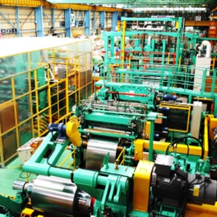 |
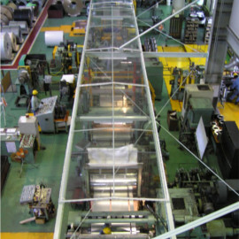 |
|
| 自動梱包ライン | 大型1号機 自動刃組装置 | オシレート機 |
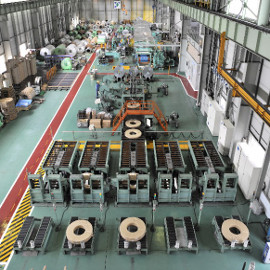 |
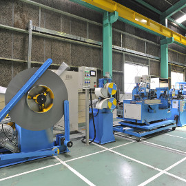 |
|
| 徹底した品質管理を行っています。 | ||
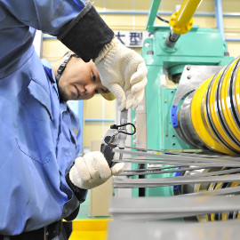 |
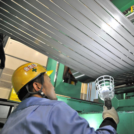 |
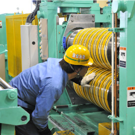 |
| 大型1号機 アンコイラー | 大型1号機 制御盤 | 自動倉庫 |
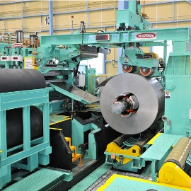 |
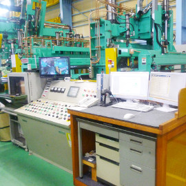 |
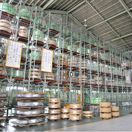 |
| 機械名 | 機械仕様 | |||||
|---|---|---|---|---|---|---|
| 板厚(mm) | 母材巾(mm) | 母材単重(kg) | 月産能力(㌧) | 稼働年 | ||
| 大型 | １号機 | 0.40 ～ 4.5 | 1,250 | 15,000 | 1,300 | 2021 |
| ２号機 | 0.15 ～ 1.6 | 1,250 | 15,000 | 800 | 2021 | |
| 小型 | ６号機 | 0.15 ～ 1.6 | 300 | 2,500 | 130 | 2020 |
| ７号機 | 0.40 ～ 4.5 | 400 | 3,500 | 150 | 2020 | |
| オシレート | Ａ号機 | 0.60 ～ 1.2 | 20 | 1,500 | 30 | 2017 |
| Ｂ号機 | 0.60 ～ 1.2 | 20 | 1,500 | 30 | 2018 | |
| 大型1号機 自動刃組装置 | 大型1号機 | 大型2号機 |
|---|---|---|
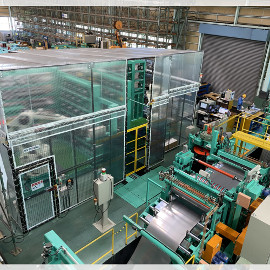 |
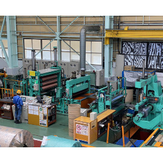 |
|
| 小型6号機 | 小型7号機 | オシレート機 |
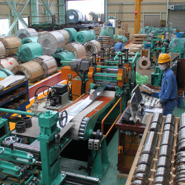 |
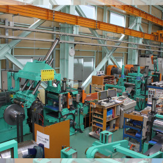 |
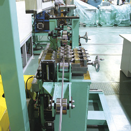 |
| セキュリティカメラ | 立体自動倉庫 | 南ヤード |
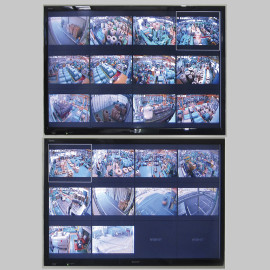 |
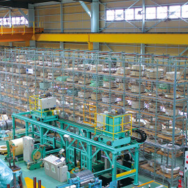 |
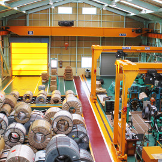 |
ＩＳＯ１４００１ 環境方針 |
|
|---|---|
|
仁淀鉄鋼株式会社は、生産効率の追求ときめ細かなサービス活動によって、
|
ＩＳＯ９００１ 品質方針 |
|
|---|---|
|
当社の業務と製品の『質』を向上させ、 |
|
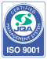 ＪＱＡ－ＱＭＡ１０４５５ 奈良工場 ・ 東京工場 |
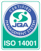 ＪＱＡ－ＥＭ６８９０ |
レジリエンス認証の取得 |
|
|---|---|
|
当社は、内閣官房国土強靭化推進室が進める国土強靭化団体認証（レジリエンス認証）制度において、2020年11月30日に国土強靭化貢献団体として一般社団法人レジリエンスジャパン推進協議会から認証を取得いたしました｡ 大規模災害発生によるお客様への事業影響を最小限に抑えるべく事業継続計画（BCP）を制定し定期的な災害訓練等に取り組んでおります。
レジリエンス認証とは、一般社団法人レジリエンスジャパン推進協議会が、 |
|
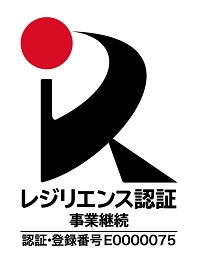 |
|
従業員がその能力を発揮し、家族との生活・時間をしっかり確保することができる 【次世代育成支援対策推進法・女性活躍推進法】目標①：年次有給取得率を上げるための措置を実施する。 2024年度実績：62.4％ 計画期間 2026年4月1日～2028年3月31日までの2年間 ＜対策＞ ・四半期毎に年次有給休暇の取得状況を把握する。 ・各所属長へ有休取得状況の部署別取得率の通知を実施し、年次有給休暇5日以上取得の他、 取得しやすい職場環境を整備する。 目標②：「ノー残業」を方針とするが、業務上必要な残業は月平均2時間以内とする。 2024年度実績：0.3時間/1人当たり 計画期間 2026年4月1日～2028年3月31日までの2年間 ＜対策＞ ・月末時点での時間外労働実績を事業所ごとに周知し、残業削減への意識高揚を図る。 ・残業の事前承認制を継続することで、要因及び課題を抽出し、残業削減に向けた業務改善を検討し、実施していく。 目標③：男性社員の平均育児休業取得率を30％以上とする。 2024年度実績：25％ 計画期間 2026年4月1日～2028年3月31日までの2年間 ＜対策＞ ・男性社員の育児休業等の取得状況について実態把握する。 ・育児休業（特に「産後ﾊﾟﾊﾟ育休」）の制度内容、給付金等について周知する。 【女性活躍推進法】目標①：女性社員の平均勤続年数15年以上を目指す。 2025年3月時点：12.1年（営業、事務10.4年、製造12.6年） 計画期間 2026年4月1日～2028年3月31日までの2年間 ＜対策＞ ・職場環境への要望、改善点等をヒアリングするなどして見えてくる課題を、必要度合いに応じて随時改善していく。(実績：工場内女子トイレ、浴室設置等) ・女性係長職などの積極的登用。全社員のキャリア形成に向けて、資格取得の支援、外部セミナー研修や社内外勉強会等を実施する。 |
|
当社の「反社会的勢力排除に向けた基本方針」を以下に示します。
|
SDGs債への投資 |
|
|---|---|
|
当社は、SDGsの達成に向けた高速道路事業の社会的・環境的課題解決に資するプロジェクトの資金調達のために発行されるサステナビリティボンド（SDGs債）に投資しました。 この投資は、高速道路事業における交通安全確保や災害対策などの社会貢献活動、排水性舗装や道路照明のLED化などの環境貢献活動に活用されます。また、SDGsのいくつかの目標にも貢献します。 詳細は、 「阪神高速道路株式会社が発行する「サステナビリティボンド」への投資について」 をご覧ください。 |